Let’s look at the disclosure of element of the CARET program at PACL. It is actually a very informative disclosure, and as such it was denounced as a hoax by the NSA and related MAJestic support organizations. However, the reader should not be confused. This is a valid disclosure, and as such, it is useful to “smoke out” which UFO and investigative organizations have been compromised by the USA government.
I cover this disclosure exactly as it was presented. Today, of course it is pretty difficult to find the actual disclosure, at least in the United States. I also present some commentary and related information that is spawned off this disclosure.
Introduction
“We are just an advanced breed of monkeys on a minor planet of a very average star. But we can understand the Universe. That makes us something very special.” ― Stephen Hawking
This is the entire text of the “C.A.R.E.T. disclosure”. I place it here in complete verbatim as was provided on the Internet. This disclosure is perhaps the most authentic extraterrestrial disclosure made public in the five decades of secrecy. (Aside from MJ-12)
While it is well known that major UFO and debunking organizations have derided this disclosure as a fraud, I happen to know that it is not a fraud at all. Instead it is a valid disclosure of a small part of one of the myriad of extraterrestrial reverse engineering efforts of the 1980’s.
C.A.R.E.T. is a VALID and ACTUAL disclosure of (associative) MAJestic documentation.
The disclosure contains an explanation, with selected pages from three separate reports; [1] A Research Report, [2] An Inventory Review, and [3] a Linguistic Primer. Also included were some actual photographs. Additionally some Q&A dialog occurred prior to the disclosure source going “x-ray” (silent).
This disclosure is not a fraud, fake or hoax. It is a real and valid actual disclosure. The reader should read the section concerning the United States disinformation efforts to fully appreciate the magnitude of the disclosure. If the reader chooses to believe that, it was just an elaborate hoax, fine. But it isn’t, and I am the “real deal”, so I tell the reader that if you believe me, then you must also believe the validity of C.A.R.E.T.. Alternatively, if you do not believe me, then you can’t possibly believe the C.A.R.E.T. disclosure.
“It is my view that most people dismissed the (C.A.R.E.T.) phenomena without bothering to look at the weight of evidence and testimony in it’s entirety and instead allowed forum debunkers and pseudosceptics to decide the evidence for them. Don’t let anyone live in your head rent free – as the saying goes.” -will galison May 1, 2014 at 11:37 am
The US government has devoted a lot of time and money and resources to denounce this disclosure as a hoax. In fact the NSA has even set up numerous denouncement websites and organizations. Obviously someone is deeply offended. Look at all the time and effort that was put into this. Someone obviously had [1] a lot of money, and [2] a lot of time on their hands. There was a lot of effort to debunk this “hoax”. Why? Here is just one of the many websites;
http://www.dronehoax.com/drone_history/isaac_additional/caret.htm .
I ask the reader this; how many hours do you think went into writing all these articles (on this website)? How much time and money went into the design (of the website). Is this website a simple hobby site written by a concerned blogger? All of this is for a mere sighting and the release of a mere handful of pages? Look at the effort behind this. Do you, dear reader, have the time and energy (after work) to do the same concerning an article that you read about. This is an obvious; absolutely OBVIOUS example of NSA redirection and suppression.
(Working people, with families, and a life outside of work do not have the time to devote to pages and pages of website generate denouncements. Pulling one or two hours a night was a really difficult thing to do. But these websites sprung up within weeks of the disclosures. All of which is highly suggestive that time, money and effort were purposefully devoted to this effort. Just what kind of person devotes such time to a mere hoax?)
The following is the actual disclosure. I am presenting it exactly as it was released. However, certain foot notes and minor editing corrects might be present for the purposes of understandability. Header and address information is provided in a different font for readability purposes.
First Disclosure
Explanation of the Recent "Strange Craft" Sightings by "Isaac" from CoastToCoastAM Website Greetings Coast to Coast AM, I have information that can explain a great deal of what is going on in the photos provided by Chad, Rajman, the Lake Tahoe witness, as well as the photos taken by Jenna and Ty in Big Basin, CA… I'm going by the alias "Isaac" while I release this information. I'm an electrical engineer and computer scientist and used to work in a program called "CARET" that was concerned with research and development based on extra-terrestrial technology. Many key elements of the technology I worked with during my time with CARET are clearly visible in these crafts. This work was done in the 80's in Palo Alto, CA, so it's no surprise to me that these sightings are taking place within such proximity to that area. Attached to this email you will find numerous scans of photographs and documents from my CARET days that pertain to what I'm going to tell you, and would like to share with your audience. In addition, I have put up a small website that has very high resolution copies of all of these scans, as well as a lengthy letter that explains a lot about me, the CARET program, and these sightings. I've been listening to your show since 2002 and would like to work with you to get this information out there. Please read the text at the website for the rest of the details, as I am taking a fairly significant personal risk and would like to make sure it's worth it: isaaccaret.fortunecity.com All I ask in sharing this information is that it's kept together. There are 4 photos and a total of 15 pages of scanned documents. If you'd like to resize them for your website, that is fine... I want people to have easy access to this information IN FULL. I feel this is reasonable and it is all I ask. I am NOT trying to sell anything and the only reason I created this very simple website is to ensure all the information is presented correctly and in one place. --Isaac

My Experience with the CARET Program and Extra-terrestrial Technology
by "Isaac"June 2007 from IsaacCaret Website This letter is part of a package I've assembled for Coast to Coast AM to distribute to its audience. It is a companion to numerous document and photo scans and should not be separated from them. You can call me Isaac, an alias I've chosen as a simple measure of protection while I release what would be called tremendously sensitive information even by today's standards. “Sensitive” is not necessarily synonymous with “dangerous”, though, which is why my conscience is clear as I offer this material up for the public. My government has its reasons for its continual secrecy, and I sympathize with many of them, but the truth is that I'm getting old and I'm not interested in meeting my maker one day with any more baggage than necessary! Furthermore, I put a little more faith in humanity than my former bosses do, and I think that a release of at least some of this info could help a lot more than it could hurt, especially in today's world. I should be clear before I begin, as a final note: I am not interested in making myself vulnerable to the consequences of betraying the trust of my superiors and will not divulge any personal information that could determine my identity. However my intent is not to deceive, so information that I think is too risky to share will be simply left out rather than obfuscated in some way (aside from my alias, which I freely admit is not my real name). I would estimate that with the information contained in this letter, I could be narrowed down to one of maybe 30-50 people at best, so I feel reasonably secure.
Some Explanation for the Recent Sightings
For many years I've occasionally considered the release of at least some of the material I possess, but the recent wave of photos and sightings has prompted me to cut to the chase and do so now. I should first be clear that I'm not directly familiar with any of the crafts seen in the photos in their entirety. I've never seen them in a hangar or worked on them myself or seen aliens zipping around in them. However, I have worked with and seen many of the parts visible in these crafts, some of which can be seen in the Q3-85 Inventory Review scan found at the top of this page. More importantly though, I'm very familiar with the “language” on their undersides seen clearly in photos by Chad and Rajman, and in another form in the Big Basin photos. One question I can answer for sure is why they're suddenly here. These crafts have probably existed in their current form for decades, and I can say for sure that the technology behind them has existed for decades before that. The “language”, in fact, (I'll explain shortly why I keep putting that in quotes) was the subject of my work in years past. I'll cover that as well. The reason they're suddenly visible, however, is another matter entirely. These crafts, assuming they're anything like the hardware I worked with in the 80's (assuming they're better, in fact), are equipped with technology that enables invisibility. That ability can be controlled both on board the craft, and remotely. However, what's important in this case is that this invisibility can also be disrupted by other technology. Think of it like radar jamming. I would bet my life savings (since I know this has happened before) that these craft are becoming visible and then returning to invisibility arbitrarily, probably unintentionally, and undoubtedly for only short periods, due to the activity of a kind of disrupting technology being set off elsewhere, but nearby. I'm especially sure of this in the case of the Big Basin sightings, were the witnesses themselves reported seeing the craft just appear and disappear. This is especially likely because of the way the witness described one of the appearances being only a momentary flicker, which is consistent with the unintentional, intermittent triggering of such a device. It's no surprise that these sightings are all taking place in California, and especially the Saratoga/South Bay area. Not far from Saratoga is Mountain View/Sunnyvale, home to Moffett Field and the NASA Ames Research center. Again, I'd be willing to bet just about anything that the device capable of hijacking the cloaking of these nearby craft was inadvertently triggered, probably during some kind of experiment, at the exact moment they were being seen. Miles away, in Big Basin, the witnesses were in the right place at the right time and saw the results of this disruption with their own eyes. God knows what else was suddenly appearing in the skies at that moment, and who else may have seen it. I've had some direct contact with this device, or at least a device capable of the same thing, and this kind of mistake is not unprecedented. I am personally aware of at least one other incident in which this kind of technology was accidentally set off, resulting in the sudden visibility of normally invisible things. The only difference is that these days, cameras are a lot more common! The technology itself isn't ours, or at least it wasn't in the 80's. Much like the technology in these crafts themselves, the device capable of remotely hijacking a vehicle's clacking comes from a non-human source too. Why we were given this technology has never been clear to me, but it's responsible for a lot. Our having access to this kind of device, along with our occasionally haphazard experimentation on them, has lead to everything from cloaking malfunctions like this to full-blown crashes. I can assure you that most (and in my opinion all) incidents of UFO crashes or that kind of thing had more to do with our meddling with extremely powerful technology at an inopportune time than it did mechanical failure on their part. Trust me, those things don't fail unless something even more powerful than them makes them fail (intentionally or not). Think of it like a stray bullet. You can be hit by one at any time, without warning, and even the shooter didn't intent to hit you. I can assure you heads are rolling over this as well. If anyone notices a brilliant but sloppy physicist patrolling the streets of Baghdad in the next couple weeks, I'd be willing to guess how he got there. (I kid, of course, as I certainly hope that hasn't actually happened in this case) I'd now like to explain how it is that I know this.
The CARET Program
My story begins the same as it did for many of my coworkers, with graduate and post-graduate work at university in electrical engineering. And I had always been interested in computer science, which was a very new field at the time, and my interest piqued with my first exposure to a Tixo during grad school. In the years following school I took a scenic route through the tech industry and worked for the kinds of companies you would expect, until I was offered a job at the Department of Defense and things took a very different turn.
The TX-0, for Transistorized Experimental computer zero, but affectionately referred to as tixo (pronounced “tix oh”), was an early fully transistorized computer and contained a then-huge 64K of 18-bit words of magnetic core memory. The TX-0 was built in 1955 and went online in 1956 and was used continually through the 1960s at MIT.
My time at the DoD was mostly uneventful but I was there for quite a while. I apparently proved myself to be reasonably intelligent and loyal. By 1984 these qualities along with my technical background made me a likely candidate for a new program they were recruiting for called “CARET”. Before I explain what CARET was I should back up a little. By 1984, Silicon Valley had been a juggernaut of technology for decades. In the less than 40 years since the appearance of Shockley’s transistor this part of the world had already produced a multi billion dollar computer industry and made technological strides that were unprecedented in other fields, from hypertext and online collaboration in '68 to the Alto in '73. Private industry in Silicon Valley was responsible for some of the most incredible technological leaps in history and this fact did not go unnoticed by the US government and military. I don’t claim to have any special knowledge about Roswell or any of the other alleged early UFO events, but I do know that whatever the exact origin, the military was hard at work trying to understand and use the extra-terrestrial artifacts it had in its possession. While there had been a great deal of progress overall, things were not moving as quickly as some would have liked. So, in 1984, the CARET program was created with the aim of harnessing the abilities of private industry in silicon valley and applying it to the ongoing task of understanding extra-terrestrial technology. One of the best examples of the power of the tech sector was Xerox PARC, a research center in Palo Alto, CA. XPARC was responsible for some of the major milestones in the history of computing. While I never had the privilege of working there myself I did know many of the people who did and I can say that they were among the brightest engineers I ever knew.
PARC (Palo Alto Research Center Incorporated), formerly Xerox PARC, is a research and development company in Palo Alto, California, with a distinguished reputation for its contributions to information technology and hardware systems. Founded in 1970 as a division of Xerox Corporation, PARC has been in large part responsible for such developments as laser printing, Ethernet, the modern personal computer, graphical user interface (GUI) and desktop paradigm, object-oriented programming, ubiquitous computing, amorphous silicon (a-Si) applications, and advancing very-large-scale integration (VLSI) for semiconductors.
XPARC served as one of the models for the CARET program’s first incarnation, a facility called the Palo Alto CARET Laboratory (PACL, lovingly pronounced “packle” during my time there). This was where I worked, along with numerous other civilians, under the auspices of military brass who were eager to find out how the tech sector made so much progress so quickly. My time at the DoD was a major factor behind why I was chosen, and in fact about 30+ others who were hired around the same time had also been at the Department about as long, but this was not the case for everyone. A couple of my co-workers were plucked right from places like IBM and, at least two of them came from XPARC itself. My DoD experience did make me more eligible for positions of management, however, which is how I have so much of this material in my possession to begin with. So in other words, civilians like myself who had at - at most - some decent experience working for the DoD but no actual military training or involvement, were suddenly finding ourselves in the same room as highly classified extra-terrestrial technology. Of course they spent about 2 months briefing us all before we saw or did anything, and did their best to convince us that if we ever leaked a single detail about what we were being told, they’d do everything short of digging up our ancestors and putting a few slugs in them too just for good measure. It seemed like there was an armed guard in every corner of every room. I’d worked under some pretty hefty NDAs in my time but this was so far out of my depth I didn’t think I was going to last 2 weeks in an environment like that. But amazingly things got off to a good start. They wanted us, plain and simple, and our industry had shown itself to be so good at what it did that they were just about ready to give us carte blanche.
Non Disclosure Agreement. A non-disclosure agreement (NDA), also known as a confidentiality agreement (CA), confidential disclosure agreement (CDA), proprietary information agreement (PIA), or secrecy agreement (SA), is a legal contract between at least two parties that outlines confidential material, knowledge, or information that the parties wish to share with one another for certain purposes, but wish to restrict access to or by third parties. It is a contract through which the parties agree not to disclose information covered by the agreement. An NDA creates a confidential relationship between the parties to protect any type of confidential and proprietary information or trade secrets. As such, an NDA protects non-public business information.
Of course, nothing with the military is ever that simple, and as is often the case they wanted to have their cake and eat it too. What I mean by this is that despite their interest in picking our brains and learning whatever they could from our way of doing things, they still wanted to do it their way often enough to frustrate us. At this point I'm going to gloss over the emotional side of this experience, because this letter isn't intended to be a memoir, but I will say that there's almost no way to describe the impact this kind of revelation has on your mind. There are very few moments in life in which your entire world view is turned forever upside down, but this was one of them. I still remember that turning point during the briefing when I realized what he'd just told us, and that I hadn't heard him wrong, and that it wasn't some kind of joke. In retrospect the whole thing feels like it was in slow motion, from that slight pause he took just before the term “extra-terrestrial” came out for the first time, to the way the room itself seemed to go off kilter as we collectively tried to grasp what was being said. My reflex kept jumping back and forth between trying to look at the speaker, to understand him better, and looking at everyone else around me, to make sure I wasn't the only one that was hearing this. At the risk of sounding melodramatic, it's a lot like a child learning his parents are divorcing. I never experienced that myself, but a very close friend of mine did when were boys, and he confided in me a great deal about what the experience felt like. A lot of what he said would aptly describe what I was feeling in that room. Here was a trusted authority figure telling you something that you just don't feel ready for, and putting a burden on your mind that you don't necessarily want to carry. The moment that first word comes out, all you can think about it is what it was like only seconds ago, and knowing that life is never going to be as simple as it was then. After all that time at the DoD, I thought I at least had some idea of what was going on in the world, but I'd never heard so much as a peep about this. Maybe one day I'll write more on this aspect, because it's the kind of thing I really would like to get off my chest, but for now I'll digress. Unlike traditional research in this area, we weren’t working on new toys for the air force. For numerous reasons, the CARET people decided to aim its efforts at commercial applications rather than military ones. They basically wanted us to turn these artifacts into something they could patent and sell. One of CARET’s most appealing promises was the revenue generated by these product-ready technologies, which could be funneled right back into black projects. Working with a commercial application in mind was also yet another way to keep us in a familiar mind state. Developing technology for the military is very different than doing so for the commercial sector, and not having to worry about the difference was another way that CARET was very much like private industry. CARET shined in the way it let us work the way we were used to working. They wanted to recreate as much of the environment we were used to as they could without compromising issues like security. That meant we got free reign to set up our own workflow, internal management structure, style manuals, documentation, and the like. They wanted this to look and feel like private industry, not the military. They knew that was how to get the best work out of us, and they were right. But things didn’t go as smoothly when it came to matters like access to classified information. They were exposing what is probably their single biggest secret to a group of people who had never even been through basic training and it was obvious that the gravity of this decision was never far from their minds. We started the program with a small set of extra-terrestrial artifacts along with fairly elaborate briefings on each as well as access to a modest amount of what research had already been completed. It wasn’t long before we realized we needed more though, and getting them to provide even the smallest amount of new material was like pulling teeth. CARET stood for “Commercial Applications Research for Extra-terrestrial Technology”, but we often joked that it should have stood for “Civilians Are Rarely Ever Trusted.” PACL was located in Palo Alto, but unlike XPARC, it wasn’t at the end of a long road in the middle of a big complex surrounded by rolling hills and trees. PACL was hidden in an office complex owned entirely by the military but made to look like an unassuming tech company. From the street, all you could see was what appeared to be a normal parking lot with a gate and a guard booth, and a 1-story building inside with a fictitious name and logo. What wasn’t visible from the street was that behind the very first set of doors was enough armed guards to invade Poland, and 5 additional underground stories. They wanted to be as close as possible to the kinds of people they were looking to hire and be able to bring them in with a minimum of fuss. Inside, we had everything we needed. State of the art hardware and a staff of over 200 computer scientists, electrical engineers, mechanical engineers, physicists and mathematicians. Most of us were civilians, as I’ve said, but some were military, and a few of them had been working on this technology already. Of course, you were never far from the barrel of a machine gun, even inside the labs themselves (something many of us never got used to), and bi-weekly tours were made by military brass to ensure that not a single detail was out of line. Most of us underwent extensive searches on our way into and out of the building. There it was, probably the biggest secret in the world, in a bunch of parts spread out on laboratory tables in the middle of Palo Alto so you can imagine their concern. One downside to CARET was that it wasn't as well-connected as other operations undoubtedly were. I never got to see any actual extra-terrestrials (not even photos), and in fact never even saw one of their compete vehicles. 99% of what I saw was related to the work at hand, all of which was conducted within a very narrow context on individual artifacts only. The remaining 1% came from people I met through the program, many of which working more closely with “the good stuff” or had in the past. In fact, what was especially amusing about the whole affair was the way that our military management almost tried to act as if the technology we were essentially reengineering wasn't extra-terrestrial at all. Aside from the word “extra-terrestrial” itself, we rarely heard any other terms like “alien” or “UFO” or “outer space” or anything. Those aspects were only mentioned briefly when absolutely necessary to explain something. In many cases it was necessary to differentiate between the different races and their respective technology, and they didn't even use the word “races”. They were referred to simply as different “sources”.
The Technology
A lot of the technology we worked on was what you would expect, namely antigravity. Most of the researchers on the staff with backgrounds in propulsion and rocketry were military men, but the technology we were dealing with was so out of this world that it didn’t really matter all that much what your background was because none of it applied. All we could hope to do was use the vocabulary of our respective fields as a way to model the extremely bizarre new concepts we were very slowly beginning to understand as best we could. A rocket engineer doesn’t usually rub elbows much with a computer scientist, but inside PACL, we were all equally mystified and were ready to entertain any and all ideas. The physicists made the most headway initially because out of all of our skills, theirs overlapped the most with the concepts behind this technology (although that isn’t saying much!) Once they got the ball rolling though, we began to find that many of the concepts found in computer science were applicable as well, albeit in very vague ways. While I didn’t do a lot of work with the antigravity hardware myself, I was occasionally involved in the assessment of how that technology was meant to interface with its user. The antigravity was amazing, of course, as were the advances we were making with materials engineering and so on. But what interested me most then, and still amazes me most to this day, was something completely unrelated. In fact, it was this technology that immediately jumped out at me when I saw the Chad and Rajman photos, and even more so in the Big Basin photos.
The “Language”
I put the word Language in quotes because calling what I am about to describe a “language” is a misnomer, although it is an easy mistake to make. Their hardware wasn’t operated in quite the same way as ours. In our technology, even today, we have a combination of hardware and software running almost everything on the planet. Software is more abstract than hardware, but ultimately it needs hardware to run it. In other words, there’s no way to write a computer program on a piece of paper, set that piece of paper on a table or something, and expect it to actually do something. The most powerful code in the world still doesn’t actually do anything until a piece of hardware interprets it and translates its commands into actions. But their technology is different. It really did operate like the magical piece of paper sitting on a table, in a manner of speaking. They had something akin to a language, that could quite literally execute itself, at least in the presence of a very specific type of field. The language, a term I am still using very loosely, is a system of symbols (which does admittedly very much resemble a written language) along with geometric forms and patterns that fit together to form diagrams that are themselves functional. Once they are drawn, so to speak, on a suitable surface made of a suitable material and in the presence of a certain type of field, they immediately begin performing the desired tasks. It really did seem like magic to us, even after we began to understand the principles behind it. I worked with these symbols more than anything during my time at PACL, and recognized them the moment I saw them in the photos. They appear in a very simple form on Chad’s craft, but appear in the more complex diagram form on the underside of the Big Basin craft as well. Both are unmistakable, even at the small size of the Big Basin photos. An example of a diagram in the style of the Big Basin craft is included with this in a series of scanned pages from the [mis-titled] "Linguistic Analysis Primer". We needed a copy of that diagram to be utterly precise, and it took about a month for a team of six to copy that diagram into our drafting program! Explaining everything I learned about this technology would fill up several volumes, but I will do my best to explain at least some of the concepts as long as I am taking the time to write all this down. First of all, you wouldn't open up their hardware to find a CPU here, and a data bus there, and some kind of memory over there. Their hardware appeared to be perfectly solid and consistent in terms of material from one side to the other. Like a rock or a hunk of metal. But upon [much] closer inspection, we began to learn that it was actually one big holographic computational substrate - each "computational element" (essentially individual particles) can function independently, but are designed to function together in tremendously large clusters. I say its holographic because you can divide it up into the smallest chunks you want and still find a scaled-down but complete representation of the whole system. They produce a nonlinear computational output when grouped. So 4 elements working together is actually more than 4 times more powerful than 1. Most of the internal "matter" in their crafts (usually everything but the outermost housing) is actually this substrate and can contribute to computation at any time and in any state. The shape of these "chunks" of substrate also had a profound effect on its functionality, and often served as a "shortcut" to achieve a goal that might otherwise be more complex. So back to the language. The language is actually a "functional blueprint". The forms of the shapes, symbols and arrangements thereof is itself functional. What makes it all especially difficult to grasp is that every element of each "diagram" is dependent on and related to every other element, which means no single detail can be created, removed or modified independently. Humans like written language because each element of the language can be understood on its own, and from this, complex expressions can be built. However, their "language" is entirely context-sensitive, which means that a given symbol could mean as little as a 1-bit flag in one context, or, quite literally, contain the entire human genome or a galaxy star map in another. The ability for a single, small symbol to contain, not just represent, tremendous amounts of data is another counter-intuitive aspect of this concept. We quickly realized that even working in groups of 10 or more on the simplest of diagrams, we found it virtually impossible to get anything done. As each new feature was added, the complexity of the diagram exponentially grew to unmanageable proportions. For this reason we began to develop computer-based systems to manage these details and achieved some success, although again we found that a threshold was quickly reached beyond which even the supercomputers of the day were unable to keep up. Word was that the extra-terrestrials could design these diagrams as quickly and easily as a human programmer could write a Fortran program. It's humbling to think that even a network of supercomputers wasn't able to duplicate what they could do in their own heads. Our entire system of language is based on the idea of assigning meaning to symbols. Their technology, however, somehow merges the symbol and the meaning, so a subjective audience is not needed. You can put whatever meaning you want on the symbols, but their behavior and functionality will not change, any more than a transistor will function differently if you give it another name. Here's an example of how complex the process is. Imagine I ask you to incrementally add random words to a list such that no two words use any of the same letters, and you must perform this exercise entirely in your head, so you can't rely on a computer or even a pen and paper. If the first in the list was, say, "fox", the second item excludes all words with the letters F, O and X. If the next word you choose is "tree", then the third word in the list can't have the letters F, O, X, T, R, or E in it. As you can imagine, coming up with even a third word might start to get just a bit tricky, especially since you can't easily visualize the excluded letters by writing down the words. By the time you get to the fourth, fifth and sixth words, the problem has spiraled out of control. Now imagine trying to add the billionth word to the list (imagine also that we're working with an infinite alphabet so you don't run out of letters) and you can imagine how difficult it is for even a computer to keep up. Needless to say, writing this kind of thing "by hand" is orders of magnitude beyond the capabilities of the brain. My background lent itself well to this kind of work though. I'd spent years writing code and designing both analog and digital circuits, a process that at least visually resembled these diagrams in some way. I also had a personal affinity for combinatorics, which served me well as I helped with the design of software running on supercomputers that could juggle the often trillions of rules necessary to create a valid diagram of any reasonable complexity. This overlapped quite a bit with compiler theory as well, a subject I always found fascinating, and in particular compiler optimization, a field that wasn't half of what it is today back then. A running joke among the linguistics team was that Big-O notation couldn't adequately describe the scale of the task, so we'd substitute other words for "big". By the time I left I remember the consensus was "Astronomical-O" finally did it justice. Like I said, I could go on for hours about this subject, and would love to write at least an introductory book on the subject if it wasn't still completely classified, but that's not the point of this letter so I'll try to get back on track. The last thing I'd like to discuss is how I got copies of this material, what else I have in my possession, and what I plan to do with it in the future.
My Collection
I worked at PACL from 1984 to 1987, by which time I was utterly burned out. The sheer volume of details to keep in mind while working with the diagrams was enough to challenge anyone's sanity, and I was really at the end of my rope with the military's attitude towards our “need to know”. Our ability to get work done was constantly hampered by their reluctance to provide us with the necessary information, and I was tired of bureaucracy getting in the way of research and development. I left somewhere in the middle of a 3-month bell curve in which about a quarter of the entire PACL staff left for similar reasons. I was also starting to disagree with the direction the leadership wanted to take as far as the subject of extra-terrestrials went. I always felt that at least some form of disclosure would be beneficial, but as a lowly CARET engineer I wasn't exactly in the position to call shots. The truth is, our management didn't even want us discussing non-technical aspects of this subject (such as ethical or philosophical issues), even among ourselves, as they felt it was enough of a breach of security to let civilians like us anywhere near this kind of thing in the first place. So, about 3 months before I resigned (which was about 8 months before I was really out, since you don't just walk out of a job like that with a 2 week notice). I decided to start taking advantage of my position. As I mentioned earlier, my DOD experience got me into an internal management role sooner than some of my colleagues, and after about a year of that kind of status, the outgoing searches each night became slightly less rigorous. Normally, we were to empty out any containers, bags or briefcases, then remove our shirt and shoes and submit to a kind of frisking. Work was never allowed to go home with you, no matter who you were. For me, though, the briefcase search was eventually enough. Even before I actually decided to do it, I was sure that I would be able to sneak certain materials out with me. I wanted to do this because I knew the day would come when I would want to write something like this, and I knew I'd regret it until the day I died if I didn't at least leave the possibility open to do so. So I started photocopying documents and reports by the dozen. I'd then put the papers under my shirt around my lower back, tucked enough into my belt to ensure they wouldn't fall out. I could do this in any one of a few short, windowless hallways on some of the lower floors, which were among the few places that didn't have an armed guard watching my every move. I'd walk in one end with a stack of papers large enough that when I came out the other end with some of them in my shirt, there wouldn't be a visible difference in what I was holding. You absolutely cannot be too careful if you're going to pull a stunt like this. As long as I walked carefully they wouldn't make a crinkling noise. In fact, the more papers I took, the less noise they made, since they weren't as flimsy that way. I'd often take upwards of 10-20 pages at once. By the time I was done, I'd made out with hundreds of photocopies, as well as a few originals and a large collection of original photographs. With this initial letter I have attached high resolution scans of the following: A page from an inventory review with a photo that appears to depict one of the parts found in the Rajman sighting and parts very similar to the Big Basin craft The first 9 pages of one of our quarterly research reports Scans of the original photographs used in that report, since the photocopies obscure most of the details 5 pages from a report on our ongoing analysis of the “language” (inappropriately titled “linguistic analysis”), depicting the kind of diagram just barely visible on the underside of the Big Basin craft This material is the most relevant and explanatory I could find on short notice. Now that these are up, If I decide to release more in the future, I'll be able to take my time and better search this rather large collection of mine that I've sadly never organized. I'm not sure what I'll be doing with the rest of the collection in the future. I suppose I'll wait and see how this all plays out, and then play it by ear. There are certainly risks involved in what I'm doing, and if I were to actually be identified and caught, there could be rather serious consequences. However, I've taken the proper steps to ensure a reasonable level of anonymity and am quite secure in the fact that the information I've so far provided is by no means unique among many of the CARET participants. Besides, part of me has always suspected that the government relies on the occasional leak like this, and actually wants them to happen, because it contributes to a steady, slow-paced path towards revealing the truth of this matter.
Since Leaving CARET
Like I said, I left PACL (Palo Alto CARET Laboratory) in '87, but have kept in touch with a great many of my friends and coworkers from those days. Most of us are retired by now, except of course for those of us that went on to get teaching jobs, but a few of us still hear things through the grapevine. As for CARET itself, I'm not sure what's become of it. Whether it's still known by the same name, I'm quite sure it's still active in some capacity, although who knows where. I heard from a number of people that PACL closed up shop a few years after I left, but I've still yet to get a clear answer on why exactly that happened. But I'm sure the kind of work we did there is still going strong. I've heard from a lot of friends that there are multiple sites like PACL in Sunnyvale and Mountain View, also disguised to look like unremarkable office space. But this is all second-hand information so you can make of it what you will. Around 2002 or so I came across Coast to Coast AM and have been hooked ever since. I admit, I don't take most of the show's content as anything more than entertainment, but there have been occasions when I could be sure a guest was clearly speaking from experience or a well-informed source. For me, there's just something very surreal about hearing all this speculation and so-called inside information about UFOs and the like, but being personally able to verify at least some of it as being true or false. It's also a nightly reminder of how hectic things were in those days, which helps me enjoy my retirement all the more. Knowing I'm not part of that crazy world anymore really is something I enjoy on a daily basis, as much as I miss some of it.
Conclusion
What I've shared so far is only a very small portion of what I have, and what I know. Despite the very sheltered and insulated atmosphere within CARET, I did ultimately learn a great deal from various colleagues, and some of what I learned is truly incredible. I'd also like to say that for what it's worth, during my time there I never heard anything about invasions, or abductions, or many of the more frightening topics that often pop up on Coast to Coast AM. That's not to say that none of it is true, but in my time working alongside some of the most well-connected people in this field, it never came up. So at the very least I can say my intent is not to scare anyone. My view on the extra-terrestrial situation is very much a positive, albeit still highly secretive one. One thing I can definitely say is that if they wanted us gone, we would have been gone a very, very long time ago, and we wouldn't even have seen it coming. Throw out your ideas about a space war or anything silly like that. We'd be capable of fighting back against them about as much as ants could fight back against a stampede of buffalo. But that's OK. We're the primitive race, they're the advanced races, and that's just the way it is. The other advanced races let them live through their primitive years back in their day, and there's no reason to think it will be any different for us. They aren't in the market for a new planet, and even if they were, there are way too many planets out there for them to care about ours enough to take it by force. To reiterate my take on the recent sightings, I'd guess that experimentation done in the last couple months on a device that, among other things, is capable of interfering with various crafts onboard invisibility has resulted in a sudden wave of sightings. It may not explain all of the recent events, but like I said, I'd bet my life that's exactly what happened at Big Basin at least, and it's probably related in some way to the Chad, Rajman and Tahoe sightings. So, despite all the recent fanfare over this, I'd say this doesn't mean much. Most importantly, they aren't suddenly “here”. They've been here for a long time, but just happened to turn unintentionally visible for brief periods recently. Lastly, there are so many people selling books, and DVDs, and doing lectures, and all that, that I would like to reiterate the fact that I am not here to sell anything. The material I'm sharing is free to distribute provided it's all kept intact and unmodified, and this letter is included. I tend to question the motives of anyone charging money for their information, and will assure you that I will never do such a thing. And in the future, just to cover all the bases, anyone claiming to be me who's selling a DVD or book is most certainly not going to be me. Any future releases from me will come from the email address I've used to contact Coast to Coast AM, and will be sent to them only. I'd like to make this clear as well to ensure that people can be sure that any future information comes from the same source, although I must be clear: at this time I do not have any future plans for additional information. Time will tell how long I will maintain this policy, but do not expect anything soon. I'd really like to let this information “settle” for a while and see how it goes. If I find out I'm getting an IRS audit tomorrow, then maybe this wasn't too smart. Until then, I'm going to take it slow. I hope this information has been helpful.
27JUN07 Update from Isaac
From: Isaac Subject: Re: "Drones" Date: June 27, 2007 Received 1:34 PM, Albuquerque, New Mexico To: earthfiles@earthfiles.com Isaac: "There are a few misconceptions that I have noticed so far and would like to clear them up, and will also answer your questions: 1) I realize now that I did not make this clear, but I should clarify that I am not responsible for the blacking out of the Q4-86 report. Most of the copies I was able to make came from documents that were already archived, which meant that they had already been censored for use by outside parties that needed access to some, but not all, of CARET's information. I'm trying to share this information, not hide it, but if I did feel that if a given topic was too sensitive for some reason, I would make it clear that I had personally covered it up and probably try to give a reason why. 2) I do not understand the question about why the diagram would be "formatted for 8.5 x 11"... As I mention in my letter, the diagram is a reproduction, not the original. We had a team of technical artists painstakingly copy the diagram from its original source, which was a slightly curved panel not unlike the one seen in the Big Basin craft, although this one was apparently inside the craft, not on the outside. We copied it into a drafting program over the course of about a month. Our software was understandably primitive by today's standards, but it was still orders of magnitude more powerful than a pencil and paper would have been. This made a task that would have otherwise been nearly impossible relatively feasible, albeit extremely time-consuming. I can assure you, "they" did not make anything particularly convenient for us. One of the reasons we chose to reproduce that particular diagram was because out of all the diagram-artifacts we had access to, it was on the flattest surface. Since the geometry of the forms is extremely important, curvature of the surface it's printed on must be "corrected" if it is to be reproduced in a surface with a different contour (such as a flat page). This can be done in a number of ways, by either using a mathematical model to reverse the effect of the surface curves on the diagram's shapes, or by methods of physical measuring that allow precise measuring of irregular surfaces. In either case, however, it adds a significant new dimension of labor to an already extremely labor-intensive task, so it's avoided whenever possible. We really just needed one or two accurately copied diagrams to serve as convenient examples for our own work in decoding and reproducing it, so luckily this was not something we had to do often. Some experimentation was being done on ways to "scan" the diagrams as well, using an almost completely automated process that could automatically account for curved surfaces, but during my time there, very little progress was made on this front. 3) I think the confusion over the quality of the documents stems from the fact that he (critic) is under the impression they (CARET document) were typeset. They were not. First of all, I'm no guru when it comes to graphics or design, but being in close contact with numerous people from places like XPARC will give you enough background to know the lay of the land. What's first important to note is that systems capable of desktop publishing had been in development for many years before CARET, mostly starting with the Xerox Alto (in 1973), which XPARC developed themselves. In fact, I once remember hearing from someone related to the original Alto team that Boeing (I believe) used the Alto to lay out and print the documentation for one of their planes (or something to that effect, I heard the story years ago). The joke was apparently that there was so MUCH documentation that the plane itself could essentially be filled with the pages. Furthermore, laser printing itself had also been around for many years (albeit in an extremely expensive form), and was also developed within XPARC (more or less). Other systems, such as PERQ and Lilith, also came out around the late 70's and while none of them turned into major commercial products, they were not uncommon among large companies and [mostly] universities and were put to very productive use. These systems were also the inspiration for the Apple Lisa and Macintosh, which was of course perhaps the biggest factor in the consumer-level desktop publishing boom of the late 80's and early 90's. By 1984, there were quite a few options available for producing these kinds of documents, they were just ABSURDLY expensive, so they weren't on every street corner. Obviously it was nowhere near as turnkey and simple as it is today, but it was a very crude approximation of the same process with similar tools. We just had far less features and everything was a hell of a lot slower. But the point I'm trying to make is that while our method of documentation was somewhat advanced for its time, and also somewhat uncommon, it was hardly unattainable by a sufficiently motivated, financed, and well-connected organization. I had very little contact with the technical writers for the most part, but I do know that we were using this kind of technology for both page layout and printing. CARET was expected to produce a massive amount of detailed, well-formatted documentation that could be easily modified and re-used for numerous drafts and revisions, and we would not have been able to keep up using traditional page layout and typesetting techniques. The mid-1980's were a very transitional period for these fields, and I would suggest that people do not assume we were using run-of-the-mill standards. One of the things I appreciated most about CARET was that if the technology was available, and we needed it to work better or more effectively, it was given to us with little debate. But typesetting and digital page layout are apples and oranges, so I think most of this is a moot point anyway. The bottom line is that many people both inside and outside the engineering world frequently underestimate how long we've had a lot of the technology we have. 99% of the algorithms we use today were developed decades ago, they just didn't have the same practical applications immediately available. Most of the engineers of the 60's and 70's would have been right at home with today's developments and technologies. The only difference is that things have gotten smaller and faster. In the vast majority of technologies, that is the only thing that REALLY changes from one era to the next. If I told the average person that we had speech-synthesizing technology in 1936, they probably wouldn't believe me. I could show you a prototype of a simple drafting/design system that was operated by a light pen directly on a screen from the 1960's. You could draw a shape freehand, then immediately rotate it, modify it, duplicate it, or whatever. You could draw lines connecting different objects, then erase them by simply drawing a squiggly line over it. The computer could interpret the squiggles as a sign to erase something, all in real time. And this was half a century ago, and decades before CARET. Think about that for a moment. The point is, most of what we have today is much older than we think. The only differences are that it's faster, cheaper, and a marketing team has given it a glossy finish and found a commercial application for it. But if you take away some of the speed, power, ubiquity and consumer appeal, you'll find a lot of today's technology scattered throughout much of the 20th century. I hope this is helpful. Isaac"
27JUN07 Update from Isaac
More from Isaac: From: Isaac Subject: Re: "Drones" Date: June 27, 2007 Received 4:28 PM, Albuquerque, New Mexico To: earthfiles@earthfiles.com Isaac: "1) While I wasn't a major player in the (CARET) organization, I was hardly 'some worker.' My middle-management position is the only reason I was able to make out with what I did. Bear in mind that even someone in my position would never get the chance to leave with even the smallest of actual artifacts, but paperwork smuggling was feasible for anyone who wasn't subjected to the frisking. Also, let's not forget that paperwork only proves so much. I'll be the first to agree that everything I've provided could be faked, I suppose. It is, after all, just a series of images. While the powers that be obviously don't want this material leaking if they can help it, they're certainly aware that scans of documents aren't in the same league as UFOs landing on the White House lawn. I'm not the first person to leak a document or a photo, and I won't be the last. The information I've shared is very unlikely to change the world, and this is the reason I'm not worried about being literally murdered if I'm identified. I'll face consequences to be sure, but it's not the kind of thing they kill for. 2) Of course the manual doesn't look anything like typical government and military documents. The entire purpose of CARET was to recreate the look and feel of silicon valley private enterprise, populate it with private industry engineers, and let it tackle the problem of extraterrestrial technology research. Style manuals were among the numerous things we brought with us from the 'outside world.' I'm not sure what else can be said about this. I agree it's uncommon for non-standard documents to come out of this kind of research, but it's even more uncommon for people like myself (and even more so for many of my co-workers) to be brought into this kind of project in the first place. Most of us were decidedly not military men. I find it a lot more bizarre than the fact that we were able to design our reports a certain way. CARET was an exception to many of the usual rules. 3) If he (one of many critics who emailed Earthfiles and which I shared with Isaac) believes the pictures are fake, I certainly can't do or say anything to prove otherwise. He sounds very sure of himself. 4) Most importantly, be very wary of anyone who claims to 'know the mind' of extraterrestrials. The comments he's made are, to put it lightly, naive and extremely presumptuous. Firstly, he's referring to 'the aliens' as if there is a single collective group of them. The universe is not split into 'humans' and 'non-humans,' any more than Earth is split up into 'Spanish' and 'non-Spanish' or something equally arbitrary. There are numerous races - and again, like our own races of humans here on earth, they do things in very different ways. His comment that 'the aliens don't do this or that' is akin to saying 'humans don't speak Japanese.' Well, many humans don't, but Japanese humans certainly do. The point is not that his statement is right or wrong, but simply that it's phrased illogically. He then goes on to suggest that the design of the drones is wasting space, which is again, alarming in its arrogance. We had some of the brightest minds in the world spending years just to understand a single facet of their technology, while this individual claims to be able to assess basically every detail of a given design after looking at a single photo and conclude that it's inefficient. I'm not even sure such a statement should be dignified with a response, and I'm sure you can understand why. To be honest, whoever this person is, I wrote him off as soon as he said 'the aliens would never design as these pictures depict.' That's about as presumptuous (if not ignorant) as a statement on this subject can be, at least coming from a fellow human. Unless there's an alien engineer on the other side of this email, there's simply no way such statements could have merit. I'm really only writing this as a courtesy to you. At best, he's been exposed to technology from a radically different race, and at worst, he doesn't know what he's talking about. This individual may have access to real information, and he might not. If he is a fellow 'whistle blower,' then I'm not interested in attacking him. If he's not, and is simply making things up, then I'm even less interested. Whatever he is or isn't is not for me to say, but judging by the way he talks about this issue I have my doubts. It's a big world and these are complicated issues. A sense of humility and the admission we don't know everything is one of our greatest assets. Isaac"
20JUL07 Update from Isaac
July 20, 2007 Update: Since posting this Earthfiles report, I have received several emails from professionals such as this one on July 28, 2007: "I note that several readers have expressed reservations about Isaac’s hard-copies of the research material on the basis of page layout and the sophistication of the word processing. Typically the claim runs along the lines of 'couldn't do that back then.' I find it interesting that some people claim such authority when clearly they do not really know. The fact is this: The Xerox 860 was in wide use in the early to mid-80's as was the top-of-the-line dedicated Word Processor. It wasn't a PC or a general purpose computer though; all it did was WYSWIYG word pro (in fact pre-dating the WYSIWYG feature of the Mac which came a couple of years later). By today's standards it was huge, very expensive and was somewhat complicated to use. I was in the publishing business at the time and we sold newsletters to the accounting and legal profession. They were produced on the Xerox 860 by our dedicated '860 Operator' and resulted in very high quality documents that looked typeset. The layout could be 100% controlled including justification, although the fonts were mechanical font wheels that had to be swapped in and out. The printers were huge and very high-end in quality. (As a note: photocopiers were very high-end even then, although in the mid 80's were still electrostatic/toner based). Given that CARET was 'next door' to XPARC I see nothing unusual in the quality or layout of the documents and any skepticism raised on that account should be declared completely invalid. Here is a link to a reference page re the X860:" http://www.digibarn.com/collections/systems/xerox860/index.html
27JUL07 Update from Isaac
July 27, 2007 Albuquerque, New Mexico - After the Isaac letter and CARET document were released on June 26, 2007, one of the criticisms was expressed this way: "Looking at the so-called 'documentation' that goes with this stuff, the text-formatting is obviously done with relatively recent vintage page-layout software. You can tell by the perfect nature of the block justification. "That type of extremely precise (even in word-spacing), indeed perfect, text-formatting DID NOT EXIST IN 1985, particularly in a laboratory or even corporate environment. After looking at all of the fancy 'documents,' including the Macromedia Freehand or Adobe Illustrator-designed 'alien diagrams,' I state now and for the RECORD that this whole thing is a HOAX, and will be proven to be such." Another critic wondered why the extraterrestrial diagrams were formatted for 8.5 x 11-sized paper? Other repeated criticism was that if Isaac really wanted the public to see some of the research facts behind the aerial "drones," why did he blacken some of the CARET document text? One of many critics emailed these comments, which Isaac addressed in 2nd reply below: "This is a big hoax. For one thing, the US Government would NEVER allow this information to left in the hands of some worker. Another thing, the manual does not look anything like a legal NASA or a government document either. The pictures of the 'artifact' are photo-shopped and I can tell you that the aliens DO not label every single part as pictured. The anti-grav unit pictured is fake. The photos of the drone on the floor are model parts. The configuration of all the drones sent in to you and others is something the aliens would never design as all these designs pictured show gross misuse of space. All their ships are based on the use of space. Not one inch to them is wasted and if you look at the history of 'probes' from EBE's they are SMALL and fast. I think you have been had. I am surprised that you and George Noory etc. are easily tricked by this. I would definitely check with your reliable contacts deep in the 'Know' and find out for yourself." I emailed these issues to Isaac and on June 27, 2007, I received his replies in two separate emails indicated by receipt times, which Isaac gave me permission to share in an Earthfiles follow-up. My delay in reporting these emails is that I had an indication from Isaac that I might be able to interview him by phone. So, I waited, hoping the interview would occur. But to date, that has not happened.
Communication from Issac Ended after 27 July 2007
Isaac initiated his disclosure in June 2007. It created a firestorm of denunciation and ridicule. Suddenly at the end of July 2007, all communication stopped abruptly. All went silent after 4-5 weeks from the first disclosure.
Approximately 4 to 5 months later CGI versions of the CARET images made their debut. By the end of the year, a music video was released and heavily promoted by the mainstream media. This effort proceeded in parallel with a debunking effort by the NSA. Spelunking though the website archives one can easily see that the debunking websites all sprung up at about the same time (within weeks) and were very active through 2008 effectively trying to rewrite history and disparage the disclosure.
While Isaac was not in the same program that I was in, there is no doubt that he violated confidentiality restrictions that he had agreed to back in the 1980’s. I am confident that he suffered the consequences for this disclosure. I lament his loss. We all should realize that if we have information we need to do what Edward Snowden did and provide a mechanism so that all of the information might be disseminated properly upon our demise.
Pages from the Q4-86 Research Report
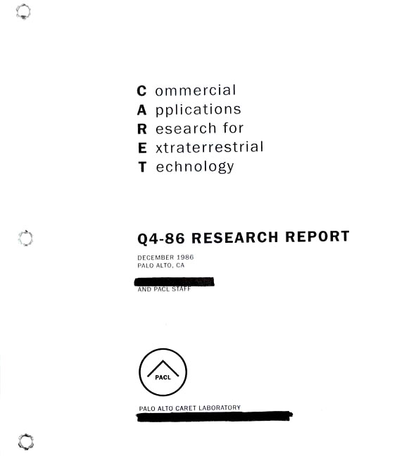
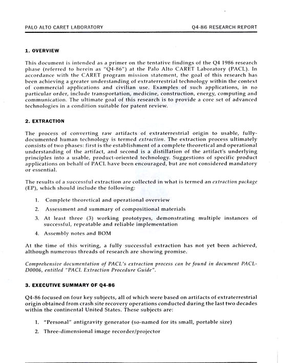
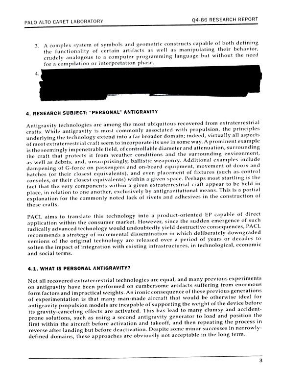
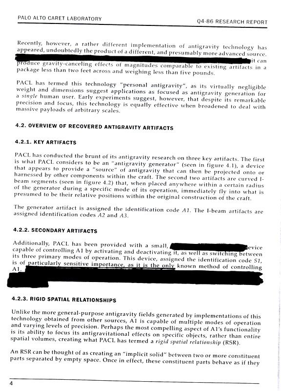
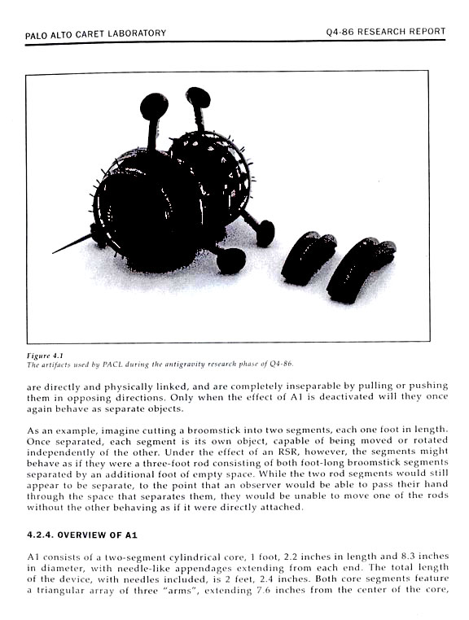
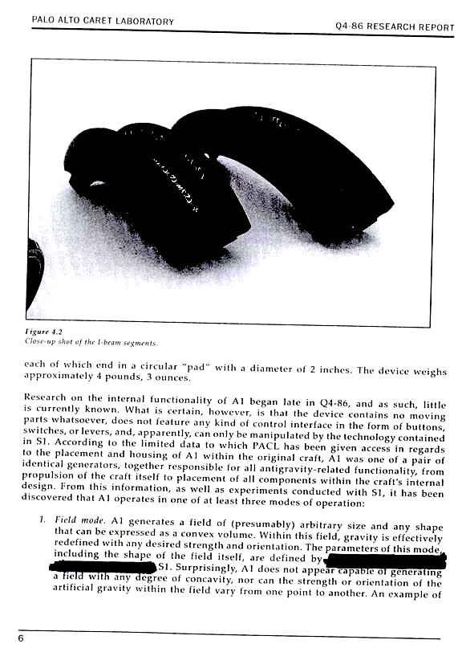
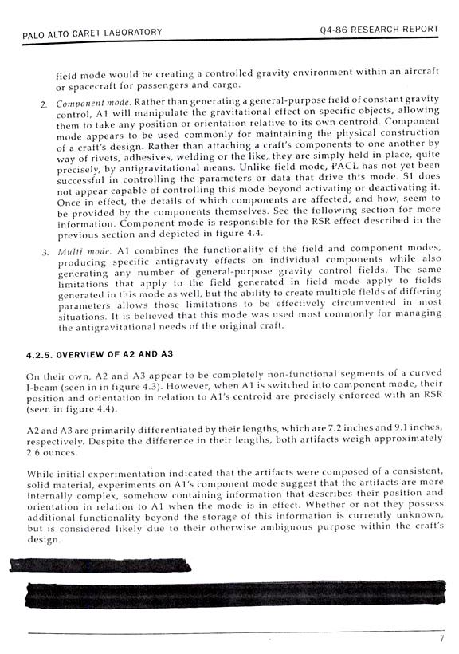
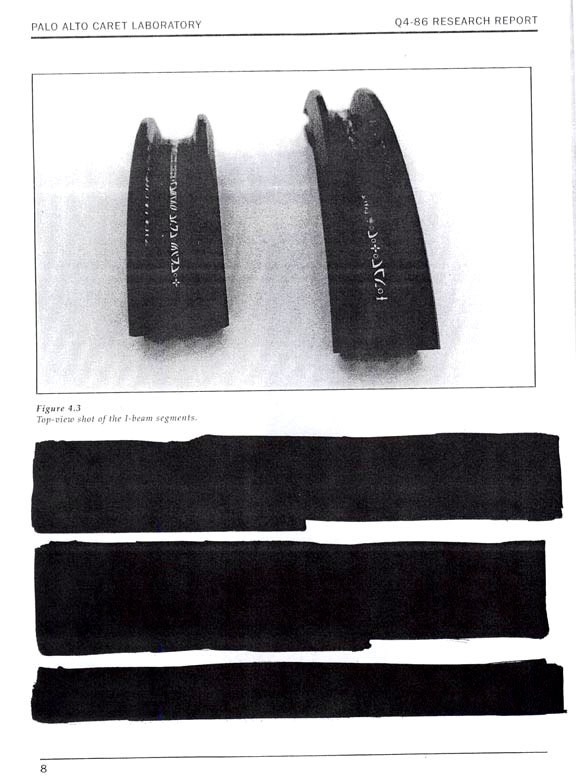
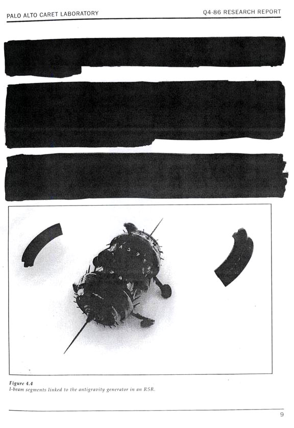
Pages from the Q3-85 Inventory Review
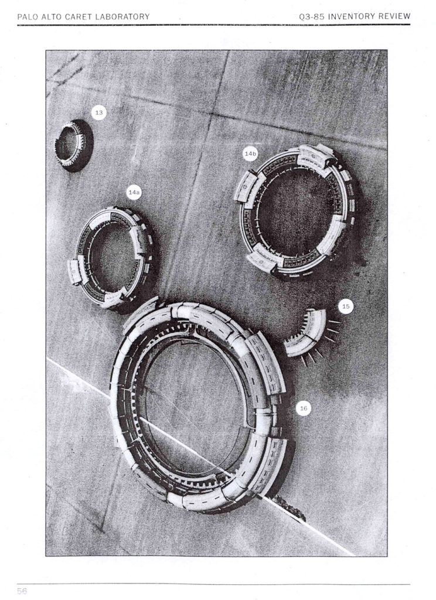
Pages from the Linguistic Primer
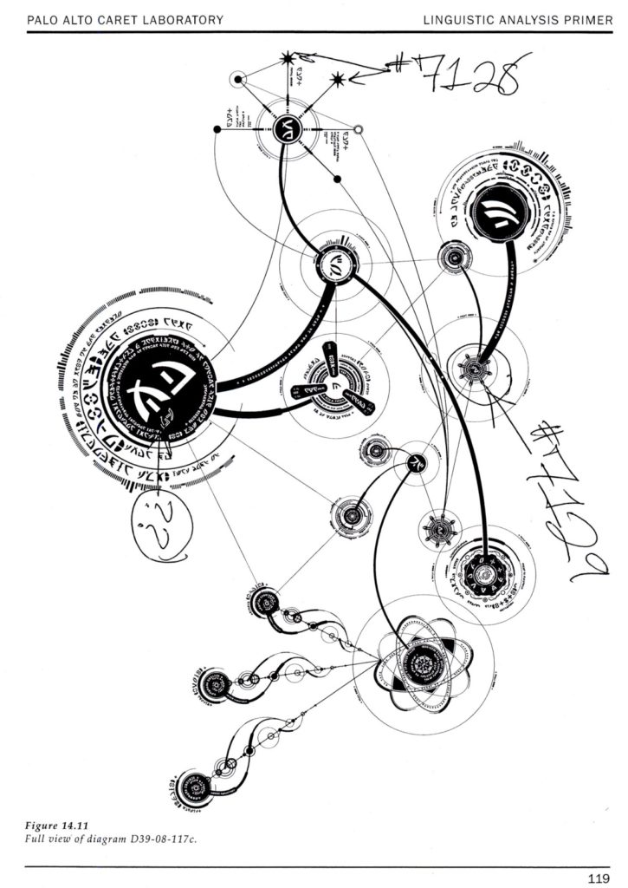
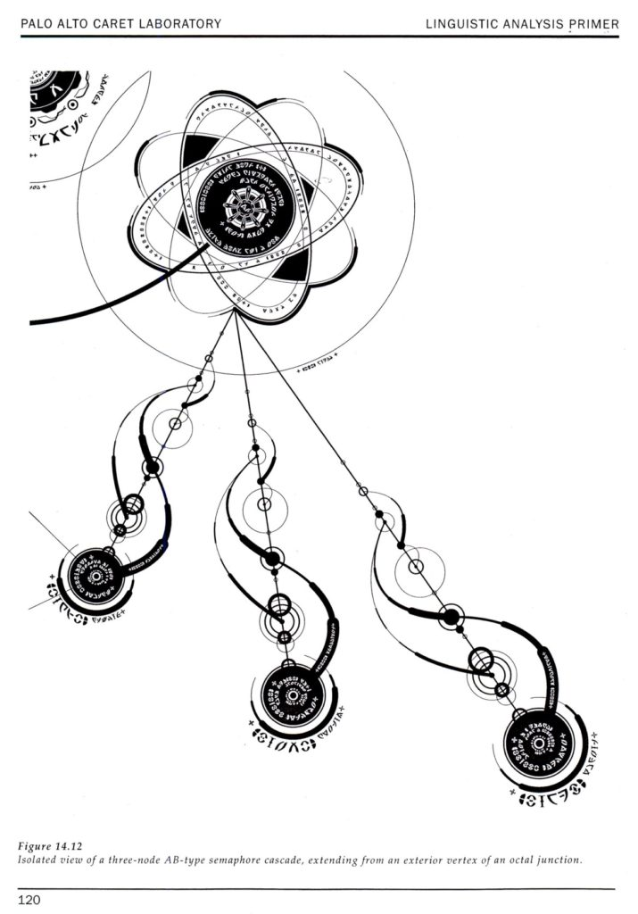
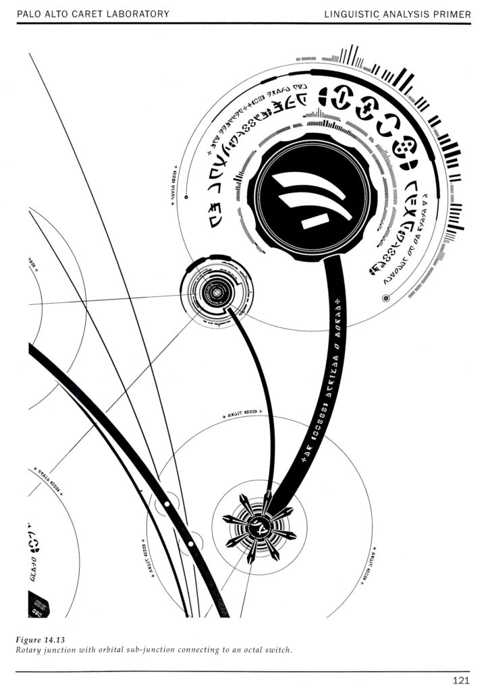
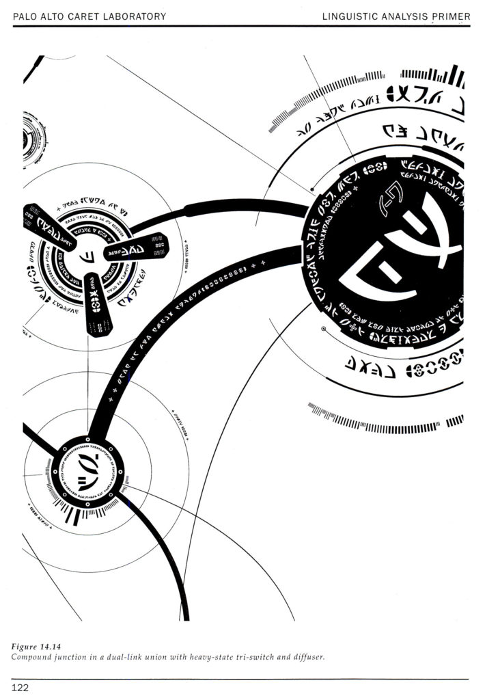
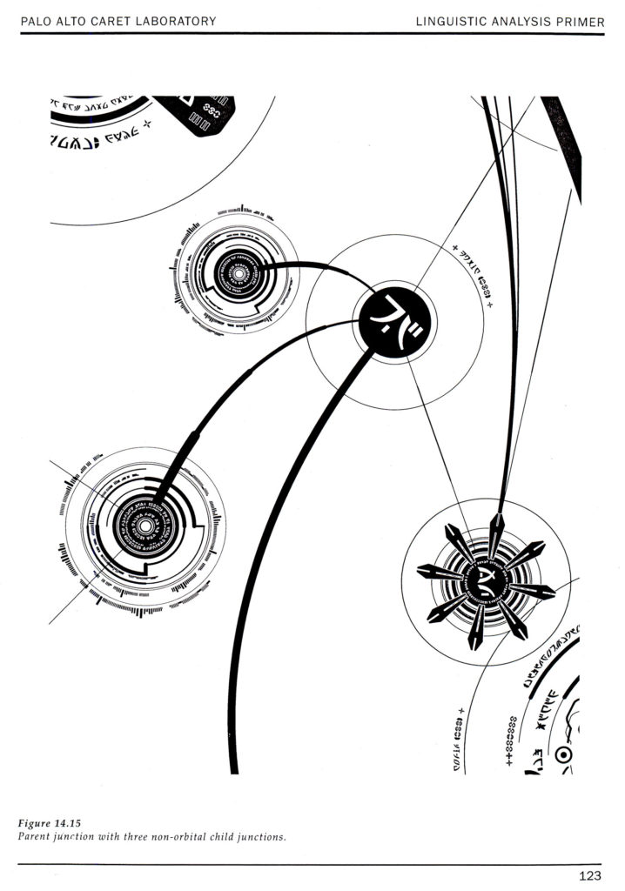
The Photographs
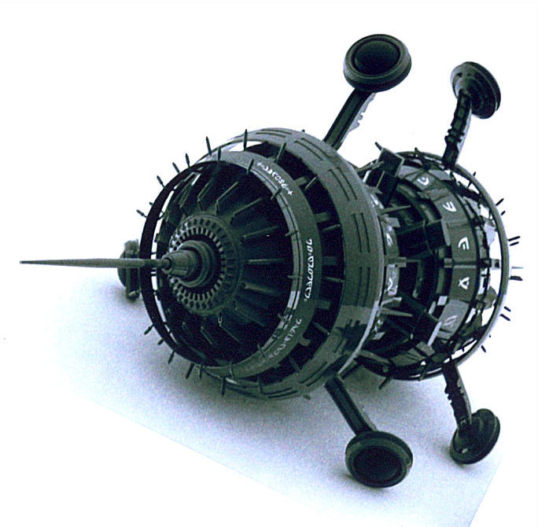
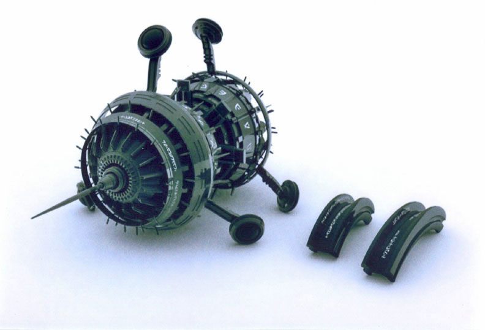
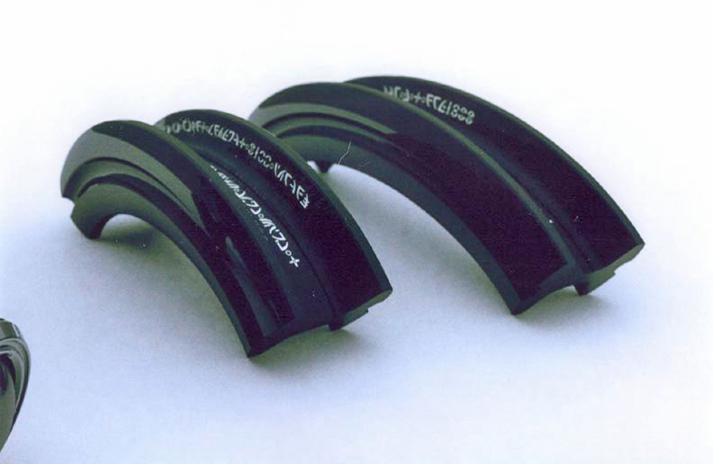
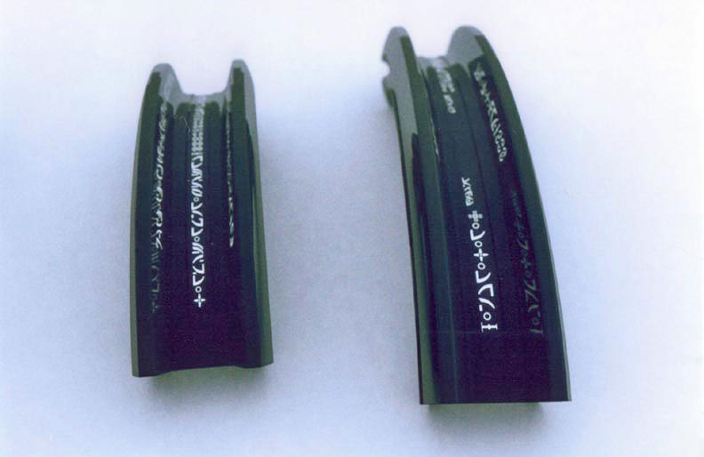
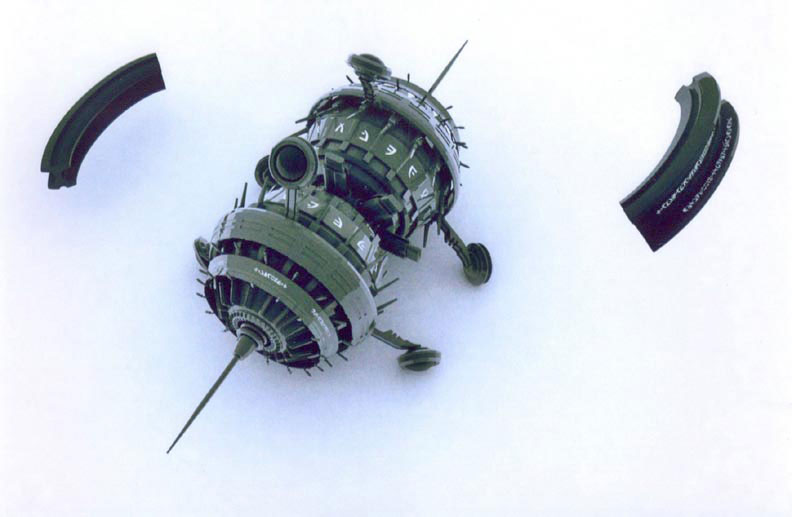
Other Opinions
Many different witnesses came forward at the time of the disclosure, from all different professions and walks of life and sightings spanning as far back as 1985. The testimony of these individuals is very hard to ignore. However, the subject matter has been largely ignored thanks to a deliberate debunking campaign. Tht campaign centered around the misinformation that these craft were simply products of CGI manipulation. Yet the sincerity, depth and breadth of the witness testimony obliterates the theory that this was CGI and / or viral marketing. Some CGI videos appeared, but they were obvious fakes and have nothing in relation to the truth of this subject.
Even some die-hard believers fell for the debunker propaganda and still to this day MOST people are not familiar with the many hours of recorded interviews conducted by Linda Moulton-Howe on this subject, and so simply cite “something they heard in a forum” or “I heard that…”. I urge those people to THINK for THEMSELVES.
Internet Searches
This might be the last repository of information concerning the C.A.R.E.T. disclosure in the world. The NSA has been very busy erasing every evidence of this disclosure. Today, it is just about impossible to find anything regarding this. (In the United States. Elsewhere in the world it is still possible to dredge up some information. But it is not at all easy.)
Pretty amazing for a “hoax”.
Typically, the NSA wants as many hoaxes as possible to self-propagate on the Internet. This serves the important purpose to “prove” that there is nothing to disclosures and other information regarding extraterrestrials. Obviously the NSA is not treating this disclosure as a hoax, but rather is trying to eliminate all evidence of its existence. Obviously the United States government has devoted time, finance, and every media resource at it’s disposal to disparage this disclosure.
Just a kind reminder, as if the reader doesn’t realize this by now. The media itself is part of the Deep State. They all are educated in the same universities by professors with horrible values, and taught the same things. They go to the same clubs. They socialize with each other. They have the same basic psychological, political, economic and philosophical underpinnings. So, of course, they look at the world through the same lens. And avoid mention of things that might be inconvenient, or conflict with their worldview.
Bing
The Microsoft search engine, out of the United States; Bing.com cannot find anything associated with C.A.R.E.T. at all! This is in every form that I tried. This is absolutely amazing. Absolutely zero hits. In fact, the absence of any kind of hit is indicative of some kind of filtering or omission software; one that specifically censors a given word or phrase. If the reader dares investigate, they will find some text at the bottom of the page that reads “Some results are removed in response to a notice of local law requirement.”
My conclusion is that the website absolutely targets the phraseology and omits every discovery from disclosure. Thus, someone, or some organization specifically censors the Bing Search Engine for C.A.R.E.T. terms, words and phrases.
This included “CARET”. “C.A.R.E.T.”, Isaac, UFO, extraterrestrial, “unspecified” reverse engineering, and all kinds of combinations of the aforementioned statement.
Wikipedia
There used to be a page in Wikipedia concerning C.A.R.E.T. but it has since disappeared. Initially, I believed that it was relocated to some other aligned page, but this was not the case.
Someone deleted the information on Wikipedia. They did so expertly. I sent an e-mail to Wikipedia concerning the deletion. (Not all deletions are so expertly done. There is often some residue of raw links left in the code.
Not in this case. This website was WIPED CLEAN and then SCRUBBED, DISINFECTED, and then POLISHED afterwards.) When I queried about the deletion to the website, I received no response back. That is, in itself unusual, as Wikipedia always have responded to my inquiries previously. The reader should note; they never responded back to me. Therefore, I have no idea what happened regarding it.
To visit Wikipedia to search for this listing go HERE.
- In 2011, there was no problem at all finding anything on the Internet regarding C.A.R.E.T.. At that time, it never occurred to me that it would be censored by the US government.
- In 2013, when compiling some information, I discovered that it was getting difficult to find the information. Google search results almost uniformly submitted debunking statements in every search result.
- As of 2014 you could still locate information concerning C.A.R.E.T. on Google, though you would have to go three or more pages deep before you could find anything of interest.
- As of 2015, all traces of C.A.R.E.T. has disappeared from Google and are unable to be found using that search engine.
- In 2016, I again attempted to use Google. Absolutely zero hits.
Yahoo
Yahoo is a very famous website. They provide news, e-mail services, and various other services such as Yahoo.Answers. What is not so well known is that they are also a search engine. Since it is not a “priority” search engine, there is every belief that they could find information on this subject. To my surprise, this was true. The American search engine; Yahoo, was very successful in finding hits for this subject.
It is my guess that the NSA doesn’t think that Yahoo! is a viable search engine any longer.
Other Sources
The reader does not have to rely on using American-censored Internet search engines to find information on this disclosure. Here is a collection of sites and sources that one can use directly. It is my sincere hope that they are not blocked in the United States. If they are, I would strongly urge the reader to take a vaction to another nation and use the Internet there (As well as the local search engines. Do not use Google.).
Read Isaac’s original whistle-blower testimony on the C.A.R.E.T program. This is the best site to obtain full resolution scans of all his provided documentation.
http://droneteam.com/isaaccaret.fortunecity.com/index.html
Hours of podcasts of witness testimony
http://www.earthfiles333.com/
Wiki Drone Site & Forum
http://www.droneteam.com
CARET Dragonfly Drones – Lake Tahoe Sighting
http://truthfall.com/caret-dragonfly-drones-lake-tahoe-sighting/
Weird Dragonfly Aerial Drones – The Chad Photos
http://truthfall.com/weird-dragonfly-aerial-drones-the-chad-photos/
The reader should be aware that you might have to use a VPN to tunnel through the Internet blocking software that is installed in most ISP’s in the United States today. Or, alternatively visit a different country than the USA and access these sites. The United States government does ABSOLUTELY block websites that it considers “hostile” to “national interests”. I do not know if these websites fall under this cloak, but I would not put them out of the loop by any stretch of reason.

Alienware
“ What of the characters appearing on the drones being used by Dell for their Alienware computer line? I always tended to think that Dell was approached by the government and used as part of their disinformation campaign. The company was doing poorly before the release of Alienware; if the government or someone posing as an investor were to approach Dell with large a large sum of startup money for a subsidiary, on the condition that the name Alienware and a given “font” be used, how could they refuse? Does anyone know anything about this?” -Jonas July 1, 2014 at 8:58 am
“I knew about the alienware use of the symbols and graphics of the Caret stuff. It was a clear opportunistic use of the mystery behind this at the moment.” -truthseeking2015 July 27, 2014 at 10:51 pm
The company Alienware uses the C.A.R.E.T. disclosure as a screensaver and wall paper. Nice, but it tends to make people think that this is not a legitimate disclosure. (BTW; what they provide is anything but accurate. The artwork is disconnected nonsense and has and illustrates no constructive purpose. It just looks attractive. It is similar to the writing utilized, but not functional in any way.)
It is important to note that, in general, the misdirection and disinformation strategy for C.A.R.E.T. was a success.
Many people, even ones who you would think would know better, fell for it. As soon as some sort of “reasonable excuse” was presented, everyone went to that solution mindlessly.
Conclusions
During the 1980’s into 2007, various strange objects were viewed hovering, floating and moving about in the sky silently. These objects were photographed and discussed.
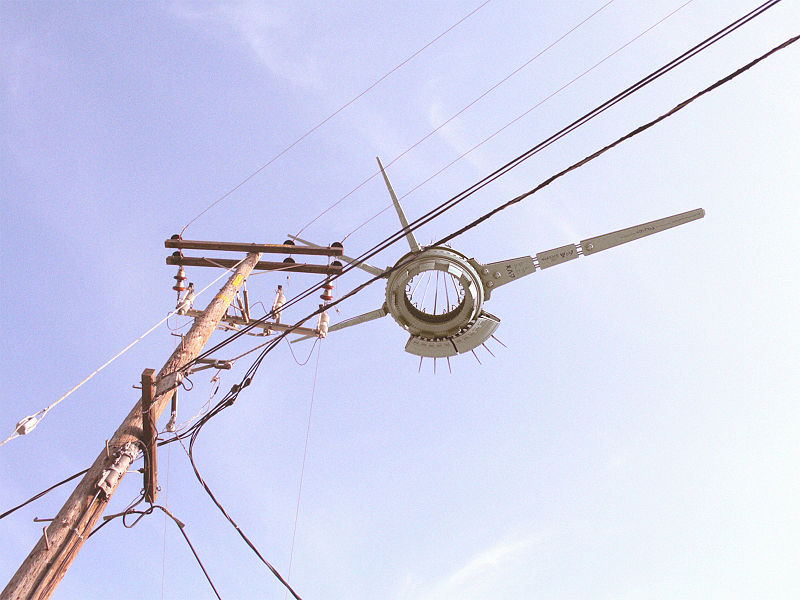
An entire write up on the various sightings of these drones can be found at TRUTHFALL. They pretty much befuddled everyone who encountered them. No one knew what they were. They look like mechanical contrivances, most certainly but they have no known writing or anything that can be used to identify them.
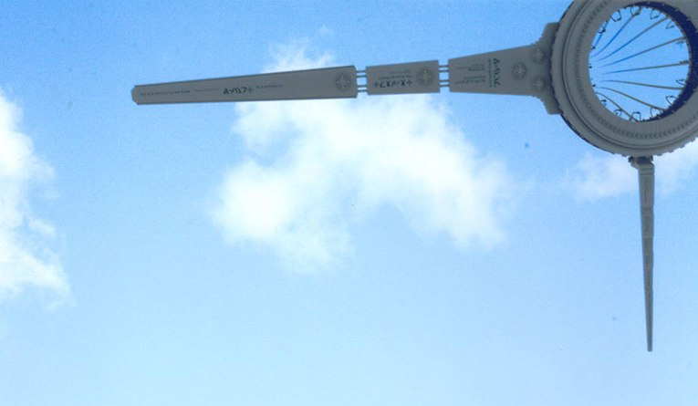
Then, a fellow known as Isaac said that he knew what these items were. He submitted the photos, documents and the text reproduced herein. Other people have also contributed various curiosities…
“I cannot remember whether they told him what it did, or if he discovered it, but he said the characters had to be on this metal, in this order, and in a particular electromagnetic field, they cloaked themselves. He said it worked by bending light. He said that the thing I had taken a picture of was simply malfunctioning, and that is why I saw part of it for a moment. He said it worked on the rods and cones in our eyes,in that it bent light. He said some animals could still see them, but if working properly, they would be nearly invisible. He called it “clear jello”.
Other people piped in…
“From what I gathered in my email correspondence from Isaac, he indicated that I was seeing them only because they were being tested by the U.S. and, had they been working properly, I would never have seen it. He said some folks only see the boom or the cage, due to a malfunction of the apparatus that bends light around it; he said that is why sometimes we will swear we just saw something in the air, then suddenly it is gone. He also indicated that dogs may be able to see them even as cloaked, and when we look at what they are barking at, we see nothing.”
After the sightings came to prevalence in 2007 a series of badly thrown together CGI YouTube movies and photographs then emerged. Some were produced by fame-seeking photoshop junkies desperate to showcase their ‘talents’, some by copycats and those desperate for viral video status. However, absolutely none of the CGI hoxers came even remotely close to resembling the original images. Nor could they explain the ever growing number of witnesses, from all ages and walks of life and geographically separate locations in the United States.
There are websites that really go all out to convince everyone that this is all just hoax. You can go visit them if you want. They are wrong.
This is an actual disclosure of technical information related to the reverse engineering of extraterrestrial technology forty years ago. To understand the level of technology that MAJestic is dealing with, please kindly take a moment to study the linguistic primer.
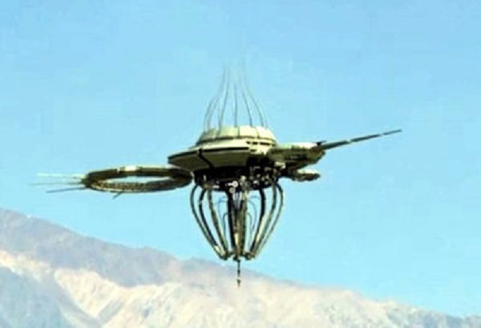
Take Aways
- There was a disclosure of reverse engineering efforts made during the 1980’s of acquired extraterrestrial technology.
- This disclosure included excerpts of various documents, photographs, and an explanation.
- Following the disclosure, there was a massive debunking effort that involved everything from multiple websites, a small army of trolls, to a music video with CGI effects. Today, most well-known UFO and similar websites consider this to be a hoax.
- This is NOT a hoax. It is a real disclosure.
FAQ
Q: Is CARET and PACL a hoax?
A: No. Throughout the 1980’s MAJestic had numerous reverse engineering efforts in process. There were also efforts related to providing support to our extraterrestrial benefactors. I cannot directly comment on specific issues, but I can confirm that the information that Isaac provided back in 2007 rings true based on my experiences.
Q: What happened to Isaac?
A: He’s probably dead. He gave away and published unacknowledged special access program documentation. He was under the assumption that maybe the worse that would happen to him would be an IRS audit. No. I am afraid that he is probably dead.
Q: What about Metallicman disclosures?
A: My role at this time is doing exactly as I am told. I could not prevent it if I wanted to. And, for what ever it is worth, I hate doing things for free. Yet, I am fucking compelled to do what I am doing. If MAJestic wanted me to stop they would do so.
MAJestic Related Posts – Training
These are posts and articles that revolve around how I was recruited for MAJestic and my training. Also discussed is the nature of secret programs. I really do not know why the organization was kept so secret. It really wasn’t because of any kind of military concern, and the technologies were way too involved for any kind of information transfer. The only conclusion that I can come to is that we were obligated to maintain secrecy at the behalf of our extraterrestrial benefactors.


MAJestic Related Posts – Our Universe
These particular posts are concerned about the universe that we are all part of. Being entangled as I was, and involved in the crazy things that I was, I was given some insight. This insight wasn’t anything super special. Rather it offered me perception along with advantage. Here, I try to impart some of that knowledge through discussion.
Enjoy.


MAJestic Related Posts – World-Line Travel
These posts are related to “reality slides”. Other more common terms are “world-line travel”, or the MWI. What people fail to grasp is that when a person has the ability to slide into a different reality (pass into a different world-line), they are able to “touch” Heaven to some extent. Here are posts that cover this topic.


John Titor Related Posts
Another person, collectively known by the identity of “John Titor” claimed to utilize world-line (MWI egress) travel to collect artifacts from the past. He is an interesting subject to discuss. Here we have multiple posts in this regard.
They are;